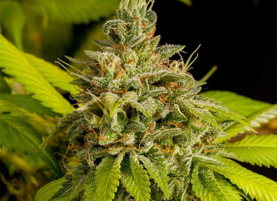
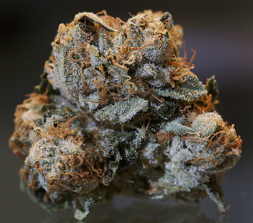
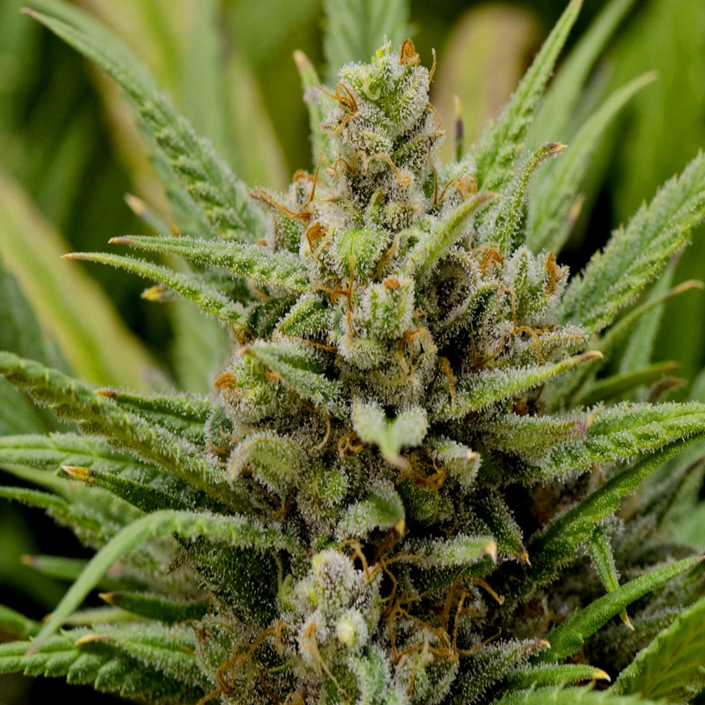

Espécies:
Skunk

Skunk ou supermaconha é uma droga ilícita, ou seja, uma substância psicoativa de ação perturbadora do sistema nervoso central. O skunk é produzido a partir de uma espécie de cannabis sativa hibrida, ou seja, resultado de cruzamentos de espécies diferentes de plantas do mesmo gênero (Cannabis sativa, Cannabis indica e Canabis ruderalis), cultivada de forma diferente, com o objetivo de obter uma concentração maior de THC (tetrahidrocannabinol), substância ativa com poder narcótico presente nas plantas desse gênero. O skunk foi desenvolvido em laboratórios holandeses, mas a disseminação das sementes pelo mundo, inclusive vendidas pela internet, é preocupante. Cultivada em condições especiais de temperatura, luminosidade e umidade, geralmente em estufas, com técnicas do sistema hidropônico, a planta desenvolve-se com maior rapidez e ocupa menos espaço. Enquanto uma planta da espécie de cannabis sativa comum mede cerca de 1,8 m, a planta cultivada nessas condições alcança apenas 30 cm. Como resultado, enquanto em uma espécie de cannabis sativa comum a concentração de THC é de 2,5%, no skunk pode chegar a 17,5%. Devido aos custos de produção elevados do skunk, a droga ficou conhecida como “maconha de rico”, pois seu preço é bem superior ao da maconha comum. Para o usuário, não há como diferenciar a maconha do skunk visualmente. O que ocorre é que as sensações ao consumir determinada quantidade de skunk, ao serem comparadas com o consumo da mesma quantidade de maconha, são bem mais intensas, devido ao maior índice de THC no skunk. Portanto, os efeitos do skunk são os mesmos da maconha, potencializados. A ação do skunk no organismo é o mesmo da maconha, no entanto, devido a alta concentração de THC, a possibilidade do usuário tornar-se dependente é bem maior.
Ações no Organismo
"A droga começa a ser absorvida pelo fígado até que o composto THC alcance o cérebro e o aparelho reprodutor. Efeitos colaterais: como já foi dito, a espécie Skank é mais entorpecente que a maconha, seu uso leva a alterações da serotonina e da dopamina no organismo, e fazem o indivíduo ter dificuldades de concentração por provocar danos aos neurônios. Provoca também lapsos de memória e afeta a coordenação motora. Em geral, os efeitos da droga Skank são semelhantes aos da maconha: excitação, aumento de apetite por doces, olhos vermelhos, pupilas dilatadas, alucinações e distúrbios na percepção de tempo e espaço. ".
Kush

Os maconheiros de plantão já perceberam que, por ser uma variedade de Cannabis totalmente Indica, o Purple Kush tem efeitos de relaxamento do corpo, provoca sensações de entorpecimento e felicidade e, claro, deixa com aquela larica doida que tanto conhecemos. O que NÃO é um efeito desse tipo são as reações psicoativas, então nada de brisa. Por conta disso, o Purple Kush é bom para ser usado num dia bem tranquilo, em ocasiões de descanso com boas séries na TV ou descontração com a galera. Como uma dica amiga, nem pense em usar quando estiver lotado de responsabilidades, pois essa “roxinha” vai provocar uma onda corporal de doido que vai te deixar preso no sofá por um bom tempo. Mas, na rotina noturna, ela é a saída perfeita para quem gosta de sentir as suas barreiras serem derrubadas e entrar num estado eufórico e alegre delicioso, já que seus efeitos só se intensificam conforme o tempo vai passando.
O Purple Kush É Medicinal?
Sim! Na verdade, os vários fatores medicinais são uma mais proeminentes das características do Purple Kush. O primeiro deles é provocado pelo seu intenso potencial relaxante, perfeito para tratar dores crônicas, insônia, atrites, enxaquecas e quaisquer outras condições que tem a ver com o bem-estar do corpo. Depois, temos os benefícios para os tratamentos da depressão e da ansiedade: como tem grandes quantidades de canabidiol, o Kush roxo produz alguns efeitos sedativos que podem ser grandes aliados para o alívio desses distúrbios mentais, atrás somente da ajuda que a Cannabis Sativa oferece. Outra atuação medicinal incrível é o alívio das dores musculares e dos nervos – se você está dentro do time seleto de maconheiros que são ratos de academia, uma boa puxada no Purple Kush após um treino vai dar conta de minimizar aqueles incômodos físicos intensos. Mas não só isso: esse alívio de dores inclui também as causadas pelo câncer ou pela fibromialgia!
Haze

Essa strain tem teores de THC entre 14% e 19% com baixo CBD, normalmente em 1%. Fisicamente, as flores da planta têm uma coloração verde, com detalhes de um tom de roxo vibrante, com uma camada de tricomas pegajosos, brancos e com bastante resina. Seu aroma e sabor podem remeter a mirtilos, uvas e lavanda, bem como têm notas terrosas, apimentadas e doces.
Por ter uma alta taxa de THC, é previsível que essa strain cause maior criatividade, energia, euforia, sociabilidade e felicidade. Ainda, ela é conhecida por provocar sensações afrodisíacas – a cannabis e o sexo, inclusive, tem uma relação bem estreita. Há, no entanto, alguns efeitos negativos mais comuns: paranoia, boca seca, olhos vermelhos e tontura.
Os efeitos positivos da Purple Haze, como euforia e energia, costumam ajudar usuários que sofrem com sintomas de ansiedade, depressão, fadiga e estresse. Ainda, alguns consumidores já declararam sentir propriedades terapêuticas anti-inflamatórias e analgésicas, podendo conseguir tratar cólicas e dores de cabeça.